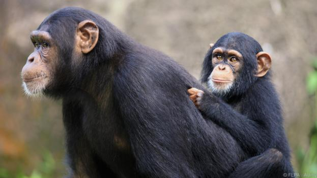
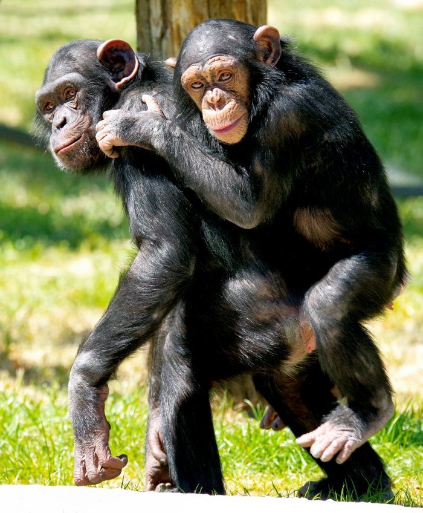
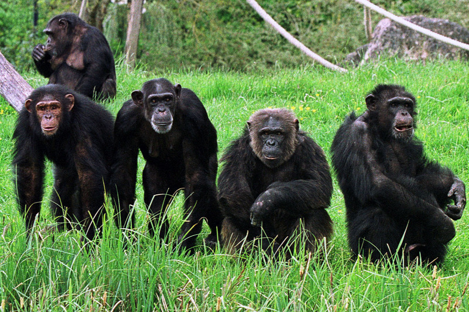
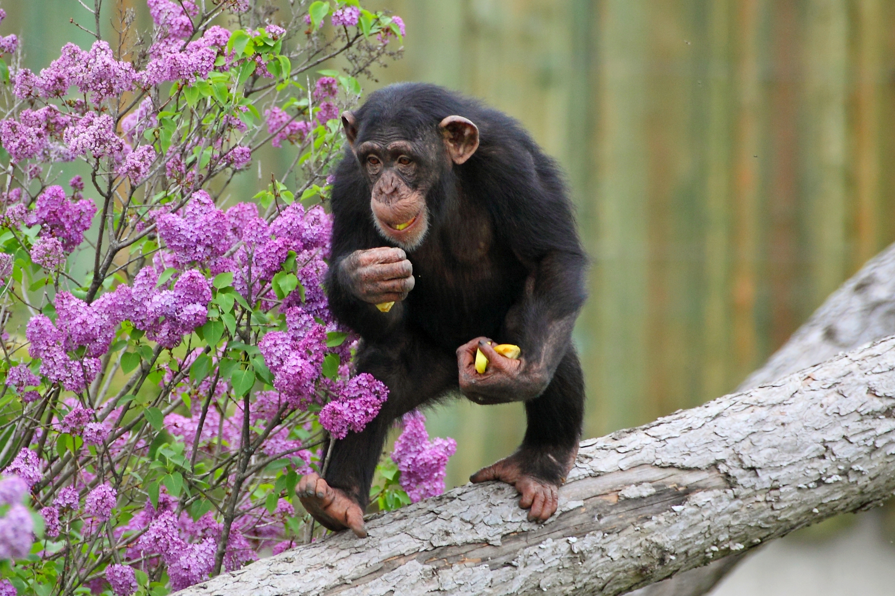
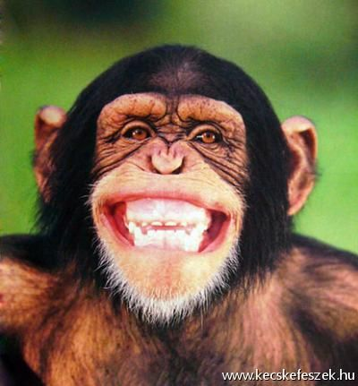
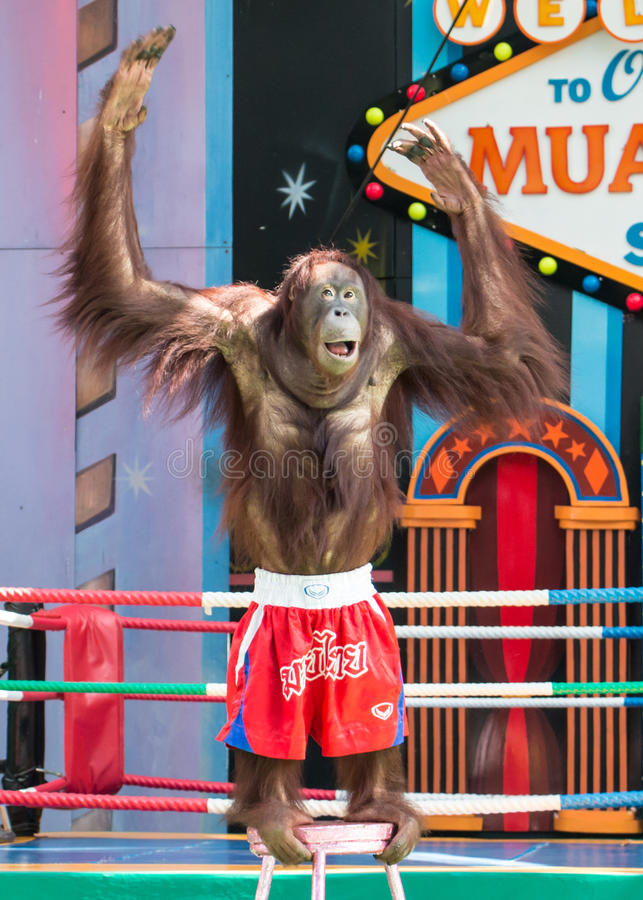

A csimpánz az emberszabású majmok egy neme, amelybe az ember két legközelebbi rokona, a közönséges csimpánz és a bonobó vagy törpecsimpánz tartozik. A csimpánzok fejlődési vonala mintegy 6 millió éve vált külön az emberekétől; a közönséges csimpánz és a bonobó mintegy 2,5 millió éve különült el.
A csimpánz név a közép-afrikai csiluba nyelv azonos jelentésű kivili csimpenze szavából származik, ami szó szerint „gúnyembert” jelent. A szó az angol nyelvben chimpanzee alakban terjedt el a 18. század első felétől. Az angolból vette át a többi európai nyelv, így a magyar is, ahol a szó kiejtését valószínűleg befolyásolta a csimpaszkodik ige hasonlósága is. Az állat tudományos neve, a Pan, úgy született, hogy a chimpanzee névből kivágták az ókori görög Pán természetisten nevével megegyező pan szót.
A nyugat-afrikai Guineától Gabonig, valamint a Kongói Demokratikus Köztársaság északi felében honos, de nem összefüggő területen, hanem néhány nagyobb és számos kisebb folton. Trópusi esőerdőkben és fás szavannákon egyaránt megél.
A csimpánzok testméretei nagy eltéréseket mutatnak, mivel egyrészt határozott nemi dimorfizmus jellemzi őket, másrészt pedig elég nagy lehet az eltérés az egyes helyi változataik között. A hímek testtömege így 35-70 kg között, testmagasságuk pedig 90-120 cm között változik; a nőstényeké 26-50 kg, illetve 70-100 cm között. Agytérfogatuk kb. 350 cm³, ami nem sokkal kevesebb, mint az ember legkorábbi ismert őseinek, a már két lábon járó Australopithecus fajoknak. A csimpánz testének felépítése az erdei életmódhoz alkalmazkodott: hosszú karjai és kezén-lábán szembefordítható hüvelykujjai segítségével épp oly ügyesen mozog a fákon és az ágak között, mint lent a földön. Testét ritkás fekete szőrzet borítja, arca azonban csupasz. Mintegy 225 napos vemhesség után a nőstény általában egy utódot szül. A csimpánzkölyök 2-4 évig él tejen, ivaréretté pedig 6-8 évesen válik, de a nőstények néha csak tízévesen válnak szaporodóképessé. Maximális élettartama a természetben 35-40 év, de egyes példányok akár a 60 esztendős kort is megérhetik. A legidősebb ismert csimpánz a Tarzan című film sztárja, Csita volt. 1932-ben született, és 2011. december 24-én veseelégtelenségben hunyt el. 32 foga van, a relatív agytérfogata nagy, nincs farka. Érzelmei vannak, ki tudja fejezni magát, van éntudata. Eszközt használ, melyet például élelemszerzésre fordít. A kurkászást szeretetből csinálja.
A csimpánzok mindenevők. Elsősorban növényeket fogyasztanak, de ha alkalmuk van rá, akkor csoportosan elejtenek kis termetű állatokat is. Gumós foguk van, az emberhez hasonlóan.
A testfelépítés és a viselkedés kapcsolata általában szoros, és ennek egyik legfontosabb kifejezője egy faj nemi dimorfizmusa (a hím és nőstény egyedek kétalakúsága). A csimpánzok nemi dimorfizmusa a gorilla és az ember közé esik. A gorillák domináns hímek vezette családokban élnek, míg az emberekre a csoport(ok)on belüli monogám férfi-nő kapcsolat a jellemző. A csimpánzok csoportszerkezetének jellemzői: zárt csoportokban több hím és nőstény él együtt; nemi érésük után a hím utódok a csoportban maradnak, a nőstények elhagyják azt; a rokon hímek közösen, együttműködve védik a nőstényeket és a csoport területét; a nőstények kapcsolata lazább; egy hím több nősténnyel tart kapcsolatot . Louis Leakey angol antropológus az elsők között ismerte fel, hogy az emberelődök feltételezett életmódjának megismerésében nagy segítséget jelenthet a ma élő emberszabású majmok viselkedésének tanulmányozása. A közönséges csimpánzok társas viszonyai jobb megismerésében Jane Goodall angol etológusnő helyszíni megfigyelései hoztak úttörő eredményeket. 2009-ben először sikerült igazolni azt a már korábban is ismert megfigyelést, miszerint a csimpánzok képesek tervezni a jövőt. A stockholmi állatkert egyik csimpánza ugyanis minden reggel követ gyűjt, hogy megdobálhassa velük a látogatókat kivéve akkor, ha az állatkert zárva van.
     